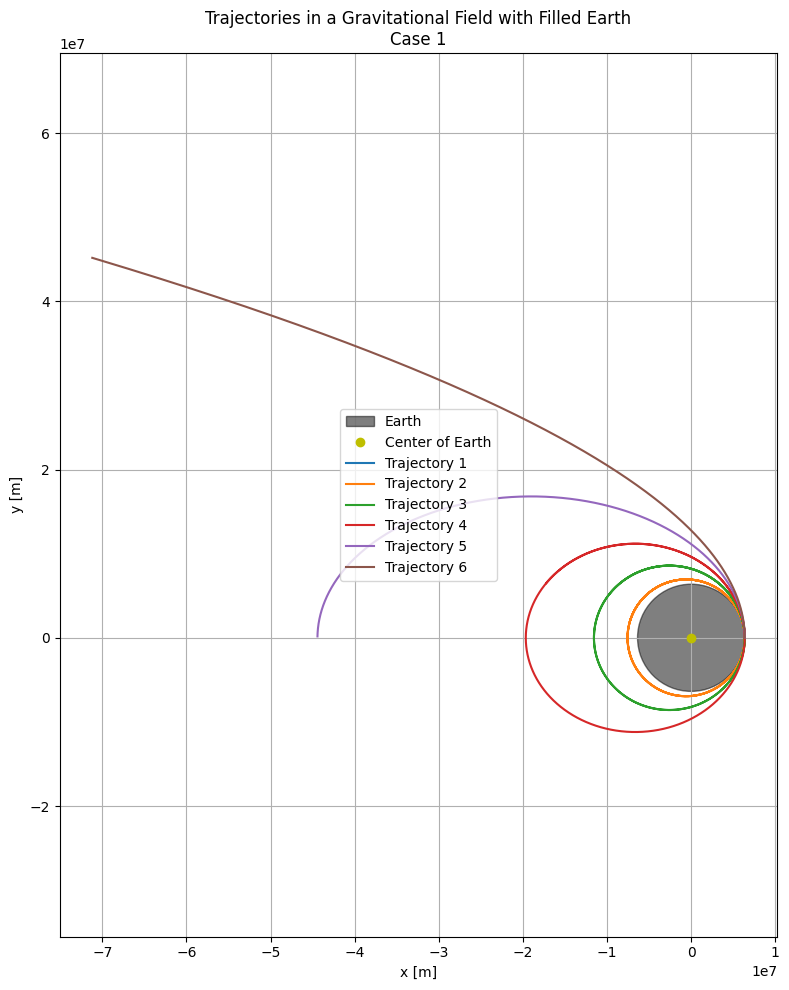

Problem 3
Motion of a Released Payload Near Earth's Surface
When a payload is detached from a moving spacecraft close to Earth, its trajectory depends on its initial speed and the gravitational influence of Earth. The resulting path falls under the category of conic sections, shaped by the total mechanical energy of the payload.
Orbital Trajectories Classification
| Path Type | Energy Criterion | Explanation |
|---|---|---|
| Elliptical | \(E < 0\) | Bound orbit — remains within Earth’s vicinity. |
| Parabolic | \(E = 0\) | Marginal escape path. |
| Hyperbolic | \(E > 0\) | Permanent escape — leaves Earth forever. |
Mechanical Energy of the Payload
The total energy of the system is calculated as:
Where: - \(m\): mass of the payload - \(v\): velocity at release - \(G\): gravitational constant - \(M\): mass of Earth - \(r\): radial distance from Earth's center
Trajectory Types
1. Elliptical Path
- Criteria: \(v < v_{esc}\)
- Nature: Closed loop
- Applications: Used for satellites and other orbital systems
2. Parabolic Path
- Criteria: \(v = v_{esc} = \sqrt{\frac{2GM}{r}}\)
- Nature: Open curve – critical escape velocity
- Applications: Ideal edge-case analysis
3. Hyperbolic Path
- Criteria: \(v > v_{esc}\)
- Nature: Open trajectory – complete escape from Earth's gravity
- Applications: Space exploration, interplanetary missions
4. Sub-Orbital (Ballistic) Path
- Criteria: Insufficient horizontal velocity, often near Earth's atmosphere
- Nature: Short-lived parabolic arc
- Applications: Ballistic tests, re-entry experiments
Motion of a Payload: Key Equations
Gravitational Force
The payload's motion is governed by the gravitational force applied by Earth:
Where: - \(G\): gravitational constant (\(6.674 \times 10^{-11} \, \text{m}^3 \, \text{kg}^{-1} \, \text{s}^{-2}\)) - \(M\): Earth's mass (\(5.972 \times 10^{24} \, \text{kg}\)) - \(m\): Payload mass - \(r\): Distance from Earth's center - \(\hat{r}\): Unit vector pointing outward from Earth
Using Newton's second law, \(F = ma\), we derive the motion equation:
Numerical Method: Runge-Kutta (RK4)
To solve this differential equation, we can use the 4th Order Runge-Kutta method, which provides enhanced precision over simpler techniques. The system of equations is split as follows:
Initial Parameters
- Initial Position: Starting altitude of 500 km above Earth's surface (\(r_0 = R_{\text{Earth}} + 500 \, \text{km}\)).
- Initial Velocity: Configurable to simulate different trajectories.
Applications: Orbit, Reentry, and Escape
1. Orbital Paths (Circular/Elliptical)
- Criteria: Released with appropriate tangential speed.
- Outcome: Forms a closed orbit around Earth.
- Key Condition: \(E < 0\)
Example Velocity: \(\(v_{\text{circular}} = \sqrt{\frac{GM}{r}} \approx 7.7 \, \text{km/s at 300 \, \text{km altitude}}\)\)
2. Reentry (Suborbital/Decaying)
- Criteria: Insufficient velocity for stable orbit.
- Outcome: Payload arcs back to Earth.
- Common Usage:
- Space capsules
- Missile trajectories
- Atmospheric reentry tests
3. Escape Trajectory
- Criteria: Velocity exceeds \(v_{esc} = \sqrt{\frac{2GM}{r}}\)
- Outcome: Payload leaves Earth's gravitational influence entirely.
- Common Usage:
- Probes to outer planets
- Deep space exploration missions
Example Escape Speed: \(\(v_{\text{escape}} \approx 11.2 \, \text{km/s at sea level}\)\)
Overview Table
| Scenario | Path Type | Typical Velocity | Primary Application |
|---|---|---|---|
| Orbital Insertion | Elliptical/Circular | ~7.7 km/s | Satellites, space stations |
| Reentry | Suborbital | < 7.7 km/s | Reentry vehicles, missiles |
| Escape | Hyperbolic | > 11.2 km/s | Interplanetary missions |
Visualization of Orbital Concepts
Trajectories Under Earth's Gravity

This simulation demonstrates payload paths influenced by Earth's gravity, assuming Earth has a uniform density. Each path showcases different motion behaviors:
- Elliptical Orbits (1–4): Representing bounded motion near Earth.
- Parabolic Escape (5): A marginal escape scenario.
- Hyperbolic Escape (6): Trajectory fully leaving Earth's gravitational pull.